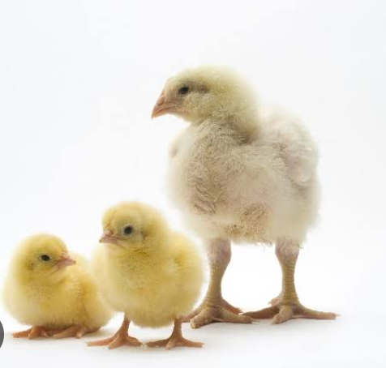
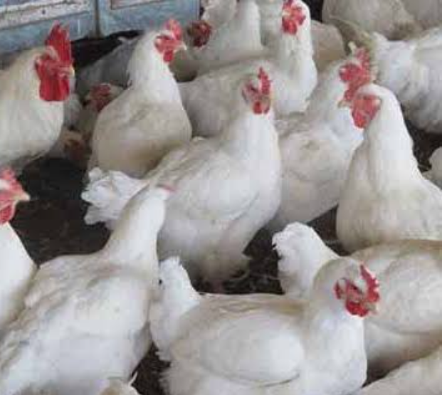

Aves de Engorda
La producción de aves de engorda es una actividad importante en kantunilkin, ya que proporciona una fuente de ingresos y empleo para las habitaciones de la región, sin embargo, es importante abordar los desafios y oportunidades paraasegurar la sostenibilidad y la rentabilidad de la producción.
Acondicionamiento del área avícola
El acondicionamiento del área avícola es basicamente preparar el lugar donde van a estar las aves, como los pollos, parabque están comodos, sanos y crezcan bien, este proceso se hace antes de que lleguen las aves. Primero se limpia y desinfecta todo el galpon para evitar enfermedades. Luego se revisa que el lugar tenga buena ventilación, temperatura adecuada y buena iluminación, asímismo se preparan comederos y bebedores, se coloca la cama en el piso para que no están en contacto directo con el suelo.
Instalación de comederos, bebederos, luz electrica:
Para la instalación de los comederos, bebederos y luz electrica, primero debemos limpiar el lugardonde estaran los pollos y ver que sea un lugar donde están seguros y protegidos del clima. Luego se colocan los comederos de forma que los pollos puedan acceder facilmente a la comida, suelen poner en línea o en circulo dependiendo del espacio ya a una adecuada asi es tambien con los bebederos y estos se colocan cerca de los comederos,pero tampoco tan juntos para evitar que el agua se ensucie yde luz electrica se coloca focos o lamparas infrarrojas y a una altura que no los queme.
Adquisición de aves, crianza y cuidados:
Para la compra de pollos primero es elegir bien donde comprarlos. Es importante que el lugar sea confiable, que las aves están sanas, activas y sin señales de enfermedades, asímismo, hay que pensar si son para producción o solo de compañia, despues en la crianza se necesita un espacio limpio, seguro y con buena ventilación.En cuanto a los cuidados hay que cambiarles el agua todos los dias, limpiar el gallinero seguido y estar atentos a cualquier cosa o comportamiento.
Crecimiento y venta de aves de engorda

Estos pollos son especialmente criados para crecer rápido y tener mucha carne en poco tiempo. desde que nacen, se les da una alimentación balanceada rica en proteína, vitamina y minerales. Además se cuida mucho su ambiente: la temperatura, limpieza y la luz normalmente en unas 6 a 8 semanas ya están listos para la venta ya que alcanzaron un buen peso y los venden a empresas procesadoras de carne, carnicerias o directamente al público.